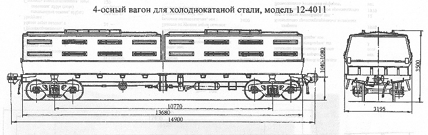

Назначение: для перевозки холоднокатанной листовой стали в рулонах и пачках
Параметры
| Номер проекта | 4011.00.001 |
| Технические условия | ТУ 24.05.485-82 |
| Модель вагона | 12-4011 |
| Тип вагона | |
| Изготовитель | ДВЗ им. газеты "Правда" |
| Грузоподъемность, т | 64 |
| Масса тары вагона, т | 29 |
| Нагрузка: статическая осевая, кН(тс) |
228(23,25) |
| погонная, кН/м(тс/м) | 61,4(6,24) |
| Скорость конструкционная, км/ч | 120 |
| Габарит | 1-ВМ(0-Т) |
| База вагона, мм | 10770 |
| Длина, мм: по осям сцепления автосцепок |
14900 |
| по концевым балкам рамы | 13680 |
| Ширина максимальная, мм | 3195 |
| Высота от уровня верха головок рельсов максимальная, мм | 3500 |
| Количество осей, шт. | 4 |
| Модель 2-осной тележки | 18-100 |
| Наличие переходной площадки | нет |
| Наличие стояночного тормоза | есть |
| Длина кузова внутри, мм | 12640 |
| Ширина кузова внутри, мм | 2615 |
| Год постановки на серийное производство | 1983 |
| Возможность установки буфера | нет |